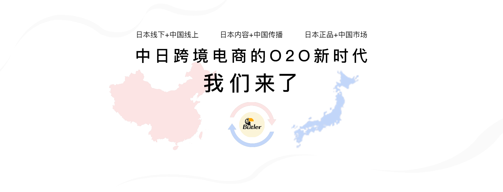
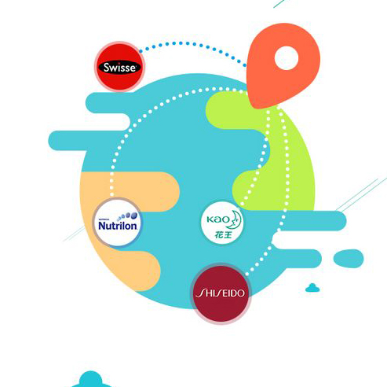

电商市场背景
电商新局面
实体药妆店
店铺合作品牌
正在做的事
联系我们

中日越境EC市場背景
中日跨境电商市场背景
政策利好：一个想买，一个想卖
中国 国家主席习近平称今后15年商品和服务的进口额将超过40万亿美元，中国将进一步降低关税，提升通关便利化水平，加快跨境电子商务等新业态新模式发展。 日本 2020年的东京奥运将进一步提升日本在全球的受关注程度，而将日本制造推向海外，尤其是购买力强大的中国及新兴的东南亚市场，是安倍政权一再强调的重要国策。
规模扩大：从来日本买到在中国买
日本贸易振兴机构在《投资日本报告2017》中称，中国跨境电商为日本企业开拓海外市场作出贡献，是日本吸收外国直接投资的一大亮点。因为2016年起，中国和日本跨境电商贸易总额超过10366亿日元（约94亿美元），首次超过赴日中国游客在日消费总额。 日本经济新闻报道，据日本经济产业省数据显示，2018年，日本到中国的跨境电商市场规模同比增长25.9%，达16339亿日元（约148亿美元），到2021年前将保持每年20%左右的增速。
在这个由世界第二和第三大经济体构建的巨大并且高速增长的商业土壤中，将诞生一批具有良好发展前景的新兴企业。
中日越境EC新情勢
中日跨境电商新局面
直播和视频
带货的热潮
中国电商行业近年兴起的直播、短视频平台带货热，形成了网红经济和内容电商的新模式，在国内市场竞争激烈下，开始涉入跨境电商领域，代表性的是淘宝全球购的李佳琦等著名主播。
新品牌和商品
的爆红机会
由于中国具有流量优势的主播、大号等积极介入，使得日本中小企业的新品牌或商品具有在中国迅速走红的可能性，也产生了中国流量在日本定制OEM商品和品牌的可行性，更有利润空间
日本线下资源
的重要性
日本是世界上线下零售消费行业最发达的国家，在日本的零售店铺现场直播，不仅提升了销售的说服力，也 能创造海外的内容，将日本线下到中国线上的跨境O2O变为可能.
中国电商
行业的变化
传统的电商巨头之外，更多的新兴电商企业涌现，社交、垂直等特色各异，2018年获得投资的达到181家，海外商品的供应链需求不断扩大，是值得被看好的增量市场.

日本には、綺麗なドラッグストアがあります
在日本，我们有一家漂亮的实体药妆店
Butler
Butler药妆店2016年开设在东京迪斯尼乐园附近的海浜幕张，几年来服务于逾十万中日顾客，积累了良好的信誉
和口碑，主营产品包括生活日用品、热门美妆、母婴保健等。店铺所在为高级商业设施，装修高雅，适合直播或
视频拍摄。
住所：〒 261-0021 日本国千葉県千葉市
美浜区ひび野2-4プレナ幕張2F
.jpg)